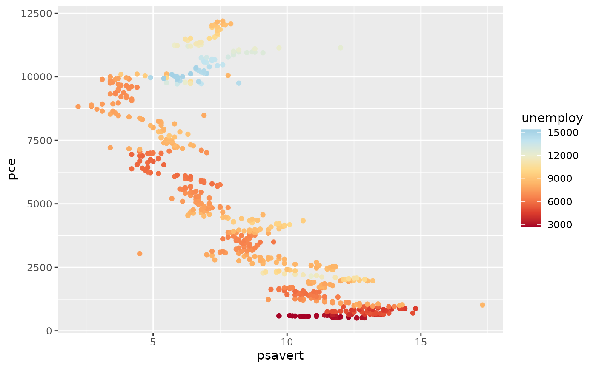
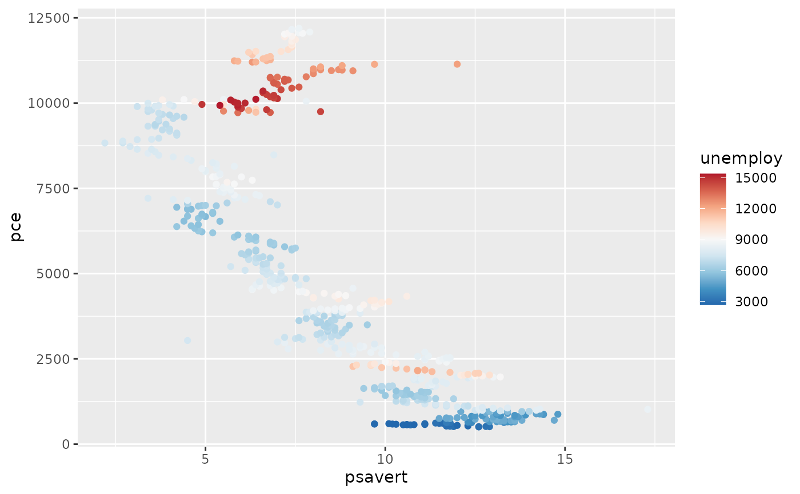
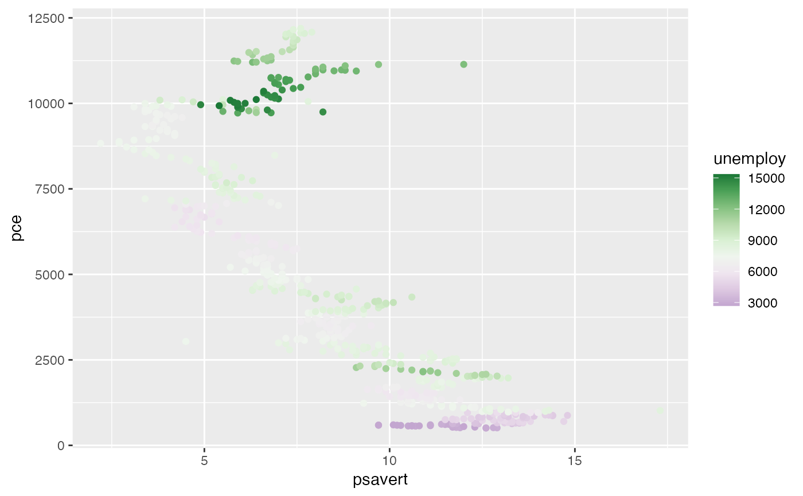

Provides diverging colour scales from Paul Tol's Colour Schemes.
scale_colour_sunset( ..., reverse = FALSE, range = c(0, 1), midpoint = 0, discrete = FALSE, aesthetics = "colour" ) scale_color_sunset( ..., reverse = FALSE, range = c(0, 1), midpoint = 0, discrete = FALSE, aesthetics = "colour" ) scale_fill_sunset( ..., reverse = FALSE, range = c(0, 1), midpoint = 0, discrete = FALSE, aesthetics = "fill" ) scale_colour_BuRd( ..., reverse = FALSE, range = c(0, 1), midpoint = 0, discrete = FALSE, aesthetics = "colour" ) scale_color_BuRd( ..., reverse = FALSE, range = c(0, 1), midpoint = 0, discrete = FALSE, aesthetics = "colour" ) scale_fill_BuRd( ..., reverse = FALSE, range = c(0, 1), midpoint = 0, discrete = FALSE, aesthetics = "fill" ) scale_colour_PRGn( ..., reverse = FALSE, range = c(0, 1), midpoint = 0, discrete = FALSE, aesthetics = "colour" ) scale_color_PRGn( ..., reverse = FALSE, range = c(0, 1), midpoint = 0, discrete = FALSE, aesthetics = "colour" ) scale_fill_PRGn( ..., reverse = FALSE, range = c(0, 1), midpoint = 0, discrete = FALSE, aesthetics = "fill" )
| ... | Arguments passed to |
|---|---|
| reverse | A |
| range | A length-two |
| midpoint | A length-one |
| discrete | A |
| aesthetics | A |
A continuous scale.
If more colors than defined are needed from a given scheme, the color
coordinates are linearly interpolated to provide a continuous version of the
scheme.
Note that the default color for NA can be overridden by passing
a value to ggplot2::continuous_scale().
| Palette | Max. colours | NA value |
sunset | 11 | #FFFFFF |
BuRd | 9 | #FFEE99 |
PRGn | 9 | #FFEE99 |
Tol, P. (2018). Colour Schemes. SRON. Technical Note No. SRON/EPS/TN/09-002, issue 3.1. URL: https://personal.sron.nl/~pault/data/colourschemes.pdf
Other colour-blind safe colour schemes:
scale_crameri_cyclic,
scale_crameri_diverging,
scale_crameri_mutlisequential,
scale_crameri_sequential,
scale_okabeito_discrete,
scale_tol_discrete,
scale_tol_sequential
Other diverging colour schemes:
scale_crameri_diverging
Other Paul Tol's colour schemes:
scale_tol_discrete,
scale_tol_sequential
N. Frerebeau
data(economics, package = "ggplot2") ggplot2::ggplot(economics, ggplot2::aes(psavert, pce, colour = unemploy)) + ggplot2::geom_point() + scale_color_sunset(reverse = TRUE, midpoint = 12000)
ggplot2::ggplot(economics, ggplot2::aes(psavert, pce, colour = unemploy)) + ggplot2::geom_point() + scale_color_BuRd(midpoint = 9000)
ggplot2::ggplot(economics, ggplot2::aes(psavert, pce, colour = unemploy)) + ggplot2::geom_point() + scale_color_PRGn(midpoint = 9000, range = c(0.25, 1))